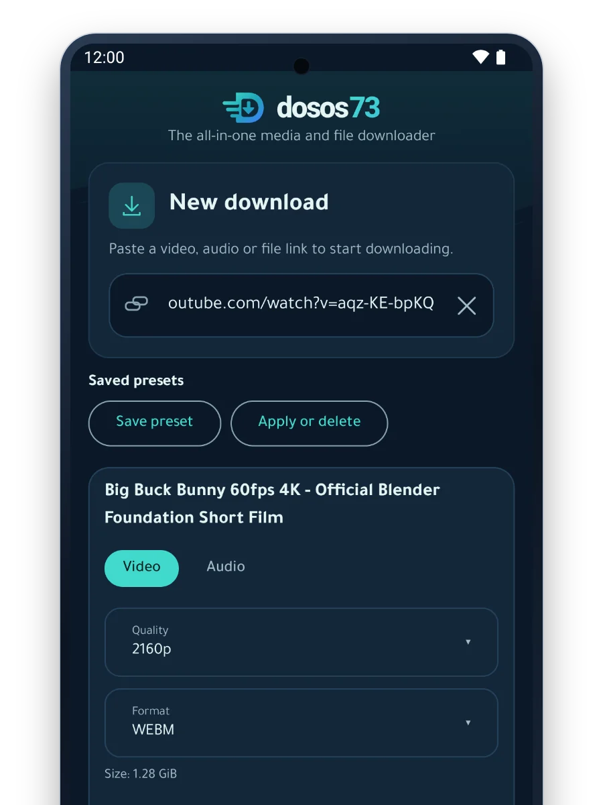
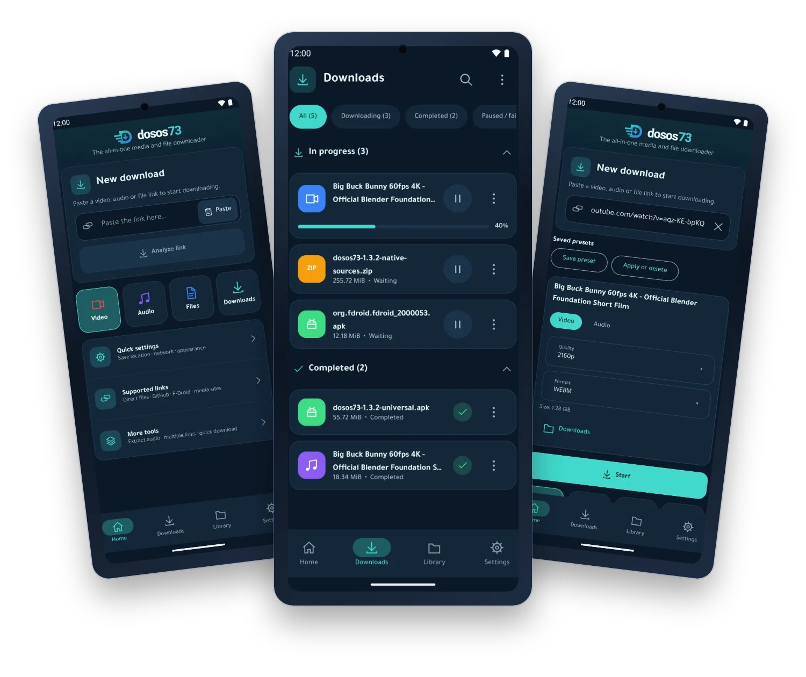
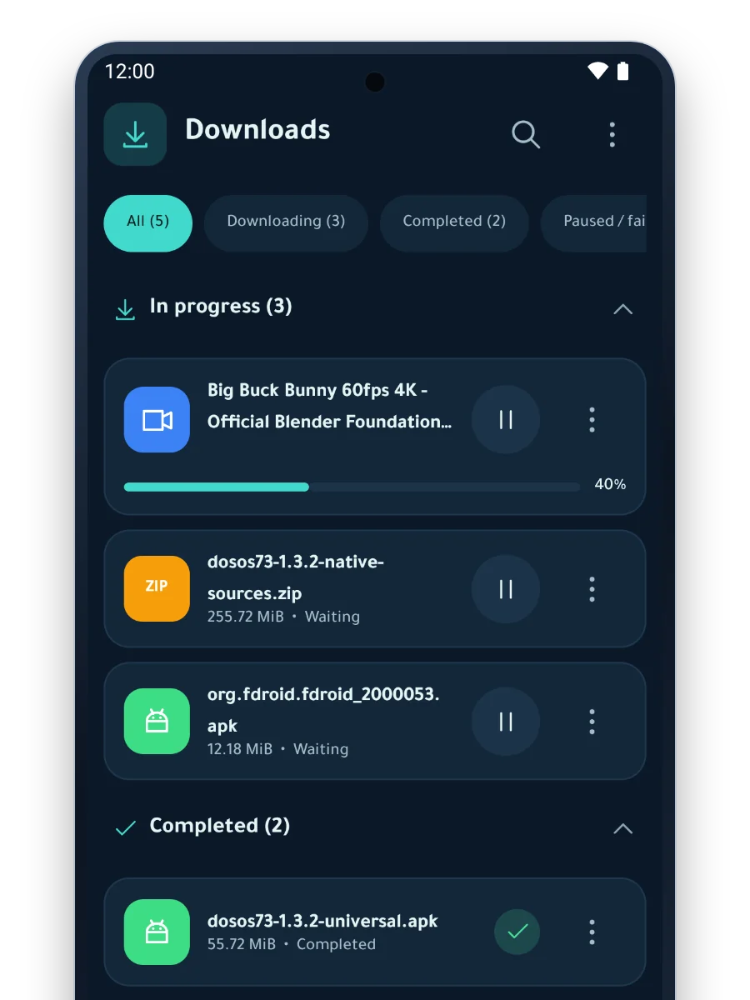
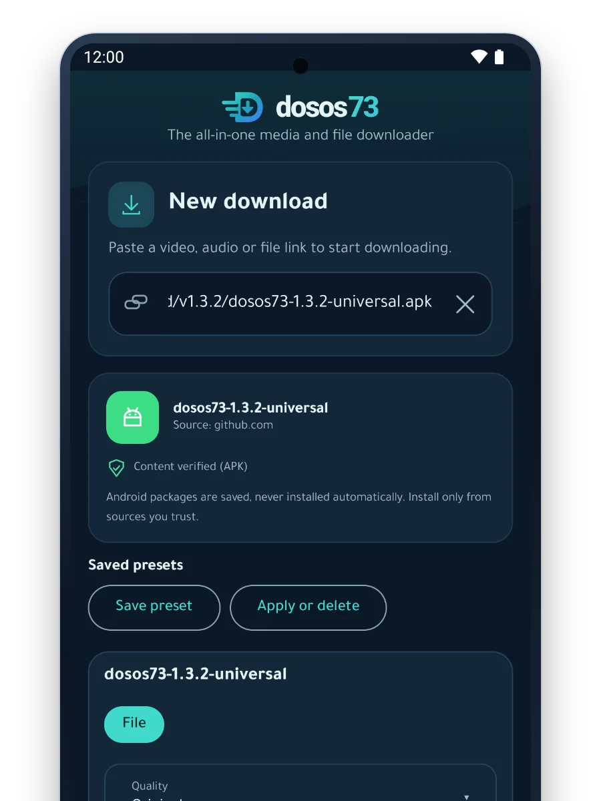
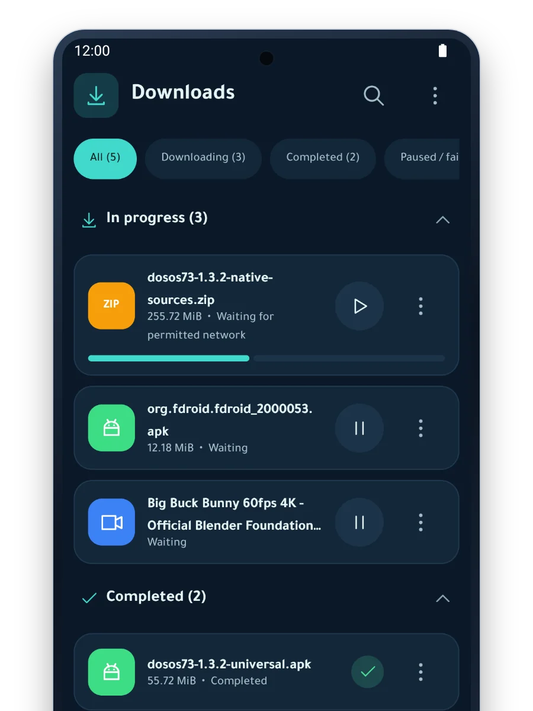
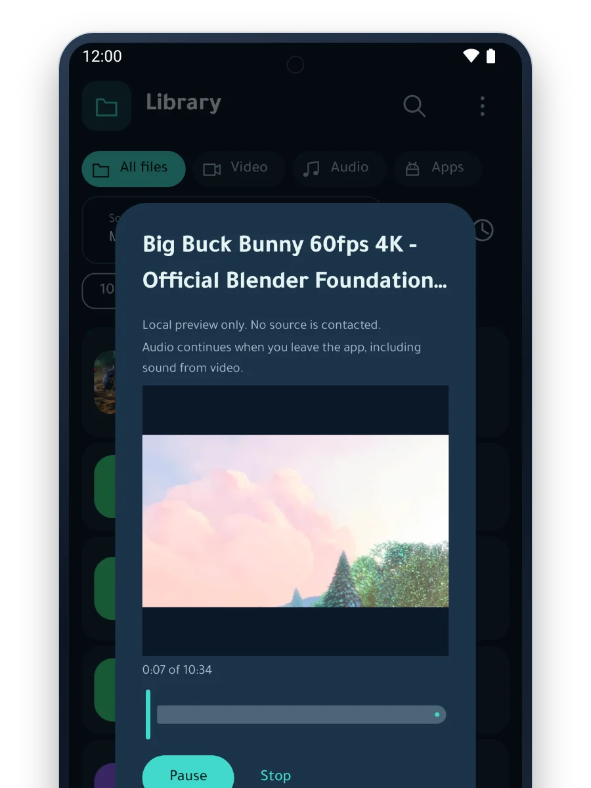

Choose before you start
See the qualities and formats the source offers, up to 2160p video or MP3 audio, with the estimated size and destination.
Open-source downloader for Android
Paste a link, pick the quality and format, and follow the download until the file is safely saved on your device. Video, MP3 audio and direct files from GitHub and F-Droid, in Arabic and English.

Every step from link to saved file is clear and verifiable.

See the qualities and formats the source offers, up to 2160p video or MP3 audio, with the estimated size and destination.

Progress, speed and time left for every file, with pause, resume and reordering, and separate lists for finished and stopped items.

Files are identified by their actual bytes, not their name, and web pages disguised as files are refused. APKs are never installed automatically.

When the network drops, the download waits and continues from the last verified point, including signed GitHub links.

Play audio and video from your device, with audio continuing in the background. Search, organize and share your files.
A right-to-left interface set in Tajawal, light and dark themes, and text that adapts to font sizes up to 200%.

One consistent design for Home, Downloads, Library and Settings, a new light theme, and support for tablets and large text.
A home-screen widget for the current download, and progress notifications with pause and cancel. File names are hidden by default.
Paste a release page or an app page, and dosos73 finds the right file through their official APIs.
Files keep their real names. A duplicate gets a distinguishing number instead of overwriting.
Downloads continue after a lost connection instead of failing, and waiting items show a Resume button.
An optional 22.32 MB package for ARM64 phones, about 62% smaller than the universal one.
Both packages are signed with the same key as 1.3.2, so they update your installed app and keep your data.
58.57 MB · ARM64, ARM32, x86 and x86_64
Works on every Android 10+ device.
Download universal APK22.32 MB · ARM64 only
For most modern phones. Its media engine has not yet been tried on a physical phone.
Download ARM64 APK466bb6301a3ca4b44c11a0fe1fc636c4267e99594926888b5d946a269baf2f2972dc7c402e8c1313076482bca3893cf5e3f7edbc885503f35d5d11b9576fd196The app collects no usage analytics. Task records are encrypted on your device, and app backup is disabled.
dosos73 does not bypass DRM, sign-in or regional restrictions. Download only what you are allowed to save.
Redirects to internal addresses are refused, HTTPS is never downgraded, and file names are sanitized. Details are in the security review.